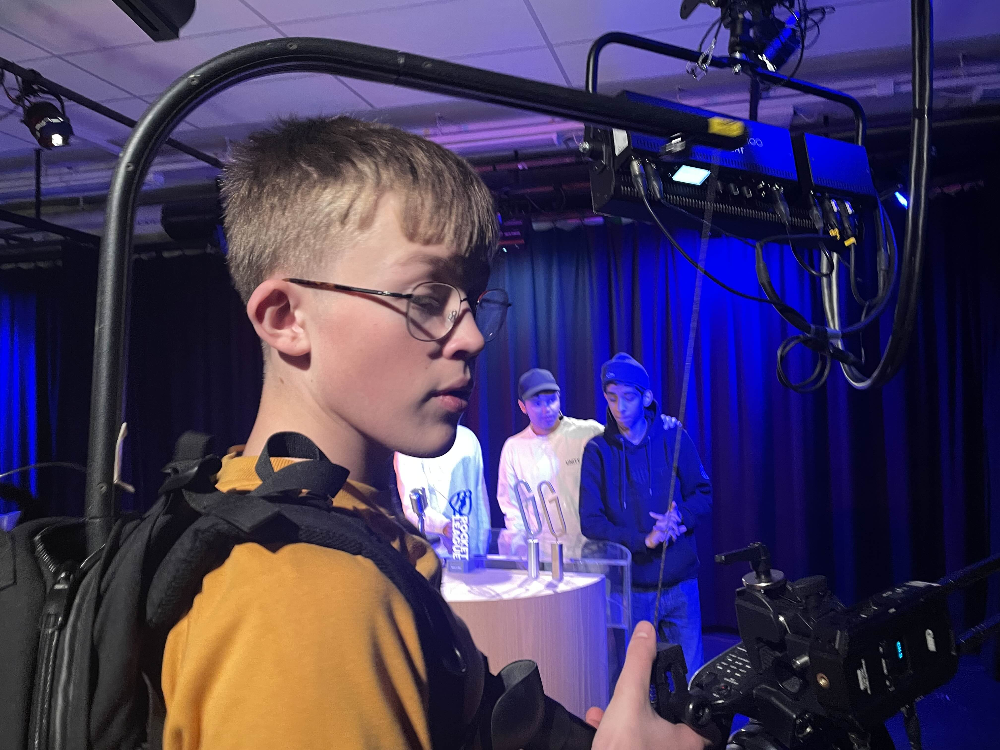

NYHET:Skjermdrama på Glemmen VGS: Stephan og Aron i knipe før Rocket League-sending

Foto: Nathalie kristiansen solheim
Glemmen videregående skole var i full sving denne onsdagen, der elever og lærere forberedte en live stream-sending om det populære spillet Rocket League. Stephan, en engasjert elev i medie- og kommunikasjonslinjen, hadde lenge gledet seg til å være med på dette prosjektet.
Med mikrofoner, kameraer, og flere skjermer på plass, så alt ut til å gå knirkefritt – helt til en uventet hendelse skapte dramatikk i siste liten.
Spennende forberedelser
Stephan hadde vist et særlig engasjement for prosjektet. Sammen med resten av teamet jobbet han med å sette opp et profesjonelt studio for live streaming. Formålet med sendingen var å kommentere og dekke skolens egen Rocket League-turnering, hvor elever fra ulike klasser skulle konkurrere om heder og ære. Publikum kunne følge med via skolens YouTube-kanal, og forventningene var høye.
Aron, en av Stephans beste venner og teknisk ansvarlig for sendingen, var også en sentral del av teamet. De to hadde brukt flere dager på å planlegge alt ned til minste detalj. Kameraer skulle gi nærbilder av spillerne, mens PC-skjermene viste actionfylte kamper i sanntid.
"Dette blir som en ekte e-sport-sending," hadde Stephan sagt med et smil tidligere på dagen. "Vi skal vise hva vi kan få til her på Glemmen."
Uventet vending: Skjermen som knuste drømmen
To timer før sendingen oppdaget Stephan og Aron at de manglet en PC-skjerm som skulle brukes til å vise kampstatistikk. "Ingen fare," sa Aron. "Jeg vet hvor vi har en ekstra skjerm. Kom, Stephan, vi henter den sammen."
De to hastet av gårde til et annet bygg på skolen, der utstyr som ikke var i bruk ble lagret. Stephan bar skjermen forsiktig mens Aron holdt døren åpen. Alt virket under kontroll – helt til uhellet inntraff. I det Stephan snublet over en løs ledning, glapp skjermen ut av hendene hans.
Lyden av knust glass fylte rommet.
Stephan stirret ned på skjermen som nå lå i flere deler på gulvet. "Nei, nei, nei," sa han og så panisk på Aron. Aron bøyde seg raskt ned for å undersøke skadene. "Den er helt ødelagt," konkluderte han etter et raskt blikk. "Vi kan ikke bruke denne."
Panikken spredte seg. De visste at sendingen ville bli langt mindre profesjonell uten denne skjermen. "Hva gjør vi nå?" spurte Stephan fortvilet. "Vi har bare to timer på oss!"
Foto: Nathalie Kristiansen Solheim
Kreative løsninger redder dagen
Tilbake i studio forklarte Stephan og Aron situasjonen til resten av teamet. "Vi har mistet en skjerm," sa Aron, "men vi kan kanskje finne en annen løsning."
En hektisk diskusjon brøt ut blant elevene. Det ble foreslått å bruke en liten bærbar PC som midlertidig erstatning, og selv om skjermen på den var mindre, kunne den fortsatt vise nødvendig statistikk. En annen elev fant en HDMI-kabel, slik at den bærbare kunne kobles til en av de fungerende skjermene.
"Det er kanskje ikke perfekt, men det får duge," sa Stephan, fortsatt tydelig preget av hendelsen.
De jobbet iherdig for å omstrukturere oppsettet, og på mirakuløst vis rakk de å få alt klart fem minutter før sendingen startet. Publikum som fulgte sendingen, merket ikke noe til dramatikken som hadde utspilt seg bak kulissene.
Sendingen blir en suksess
Til tross for problemene med skjermen, ble sendingen en stor suksess. Stephan og Aron leverte en imponerende kommentarjobb under Rocket League-turneringen, og teamet fikk skryt for den profesjonelle produksjonen. Elever fra hele skolen samlet seg for å se sendingen, både live og via opptak senere.
Rektor ved Glemmen videregående skole, som fulgte sendingen fra sitt kontor, var svært imponert. "Dette viser hvor mye kreativitet og samarbeid elevene våre har," sa hun. "Stephan og Aron, sammen med resten av teamet, har gjort en fantastisk jobb."
Lærerikt øyeblikk
Etter sendingen pustet Stephan og Aron lettet ut. "Det var nære på," sa Stephan og lente seg tilbake i stolen. "Jeg trodde virkelig vi hadde ødelagt hele opplegget."
"Det viktige er at vi fant en løsning," svarte Aron. "Og nå vet vi hva vi skal gjøre neste gang vi står i en lignende situasjon."
Selv om skjermdramaet var stressende der og da, ble det en erfaring som Stephan og Aron ikke ville vært foruten. For i e-sport og media, som i livet ellers, handler det ikke bare om å unngå feil – men om å vite hvordan man håndterer dem når de skjer.
skrevet av chat_gpt